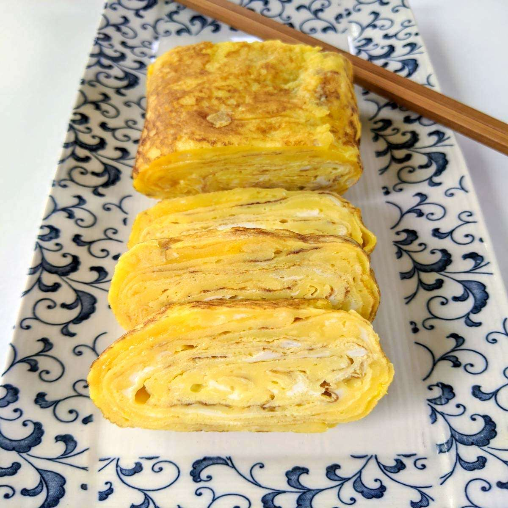

Tamagoyaki

A traditional Japanese omelette seasoned with bonito stock.
This dish has a special place in my heart as it's an omelette my mother used to
make for me frequently as a kid.
In Tokyo they like to add sugar for a touch of sweet,
but since my mother is from Kansai we're going simple and savory.
Ingredients:
- 1 tea-spoon bonito stock (powdered or liquid concentrate)
- a handful chopped spring onions
- 2 eggs
How to cook it:
- Heat a pan (rectangular if you have one) to medium heat
- Crack eggs in a bowl, add the stock and spring onions, and beat
- Pour half the eggs into the pan and fold about 3cm at a time
- Pour the rest of the eggs in and repeat